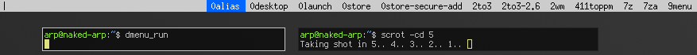
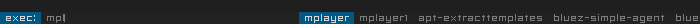
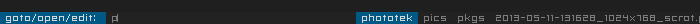
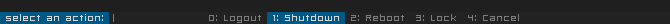

<!DOCTYPE html PUBLIC "-//W3C//DTD XHTML 1.0 Strict//EN" "http://www.w3.org/TR/xhtml1/DTD/xhtml1-strict.dtd">
<html xmlns="http://www.w3.org/1999/xhtml" xml:lang="en" lang="en">

<head>
    <meta http-equiv="Content-Type" content="text/html;charset=utf-8" />
    <link rel="stylesheet" href="../../style.css" type="text/css" />
    <link rel="Shortcut Icon" href="../../favicon.ico" type="image/x-icon" />
<!-- Page Title -->
    <title>Livarp Help Center - dmenu</title>
</head>
<!-- Page Content -->
<body>
    <div id="container">
        <div id="header">
            <h2>lang <a href="../../fr/tips/dmenu.html">fr</a>|gb</h2><h1><a href="../../index.html" title="back to main menu"></a></h1>
        </div>
        <div id="links">
            <div class="categorie">
            <h1>howto use dmenu</h1>
            <p>dmenu is a dynamic menu for X fully controlled from the keyboard. it is available for all GNU/Linux distributions. dmenu is lightweight, fast, and is developed by suckless.org as dwm.<br />
            in Debian, it is part of the package suckless-tools.</p>
            <p>dmenu starts simply with the dmenu_run command and list applications and scripts included in $PATH. Here's the default display:<br />
            <b>note:</b> once launch, demnu captures the keyboard, to skip dmenu, simply press ESC.</p>
            
            <h2>dmenu scripts included in livarp:</h2>
            <p>livarp includes some usefull scripts with dmenu in your /usr/local/bin directory:</p>
            <h3>dmenu-bind.sh</h3>
            <p>it's the basic utilisation script for dmenu; it just launch your applications:</p>
            <p class="blockquote">#!/bin/bash<br />
            exe=`dmenu_path | dmenu -b -fn "snap" -nb '#222222' -nf '#7D7D7D' -sb '#005885' -sf '#BFBFBF' -p 'exec:'` && eval "exec $exe"</p>
            
            <p>usage: launch dmenu-bind.sh from a keybind (depending on your session) and start typing the name of an application, the list is updated and ou can then type the full name or move between dmenu proposals with the arrows of your keyboard. press Enter to launch the selected application.</p>
            <h3>dmenu-home.sh</h3>
            <p>this script lists your $HOME directory and let you open/edit/display the selected file/folder with rox-filer.</p>
            <p class="blockquote">#!/bin/bash<br />
            loc=`ls -A $HOME | dmenu -b -fn "snap" -nb '#222222' -nf '#7D7D7D' -sb '#005885' -sf '#D7D7D7' -p 'goto/open/edit: '` && eval "rox $loc"</p>
            
            <p>usage: launch dmenu-home.sh from a keyboard shortcut (depending on your session) and start typing the name of a file or folder, you just have to choose in the dmenu proposals. press Enter to open/edit/display the selected file/folder.</p>
            <h3>dmenu-quit.sh</h3>
            <p>this script can replace shutdown.sh and let your execute actions on your machine.</p>
            <p class="blockquote">#!/bin/bash<br />
            # a simple logout dialog<br />
            choice=`echo -e "0: Cancel\n1: Logout\n2: Shutdown\n3: Reboot\n4: Lock" | dmenu -b -fn "snap" -nb "#222222" -nf "#7D7D7D" -sb "#7D7D7D" -sf "#222222" -p "select an action:" | cut -d ':' -f 1`<br />
            # execute the choice in background<br />
            case "$choice" in<br />
                0) exit ;;<br />
                1) xdotool key Ctrl+Alt+BackSpace &amp; ;;<br />
                2) sudo shutdown -h now &amp; ;;<br />
                3) sudo shutdown -r now &amp; ;;<br />
                4) xscreensaver-command -lock &amp; ;;<br />
            esac</p>
            
            <p>usage: launch dmenu-quit.sh from a keybind (depending on your session) then type a number or navigate through dmenu proposals with arrows keys. press Enter to execute selected action.</p>
            <p>&nbsp;</p>
            <h2>other scripts</h2>
            <h3>dmenu-wall.sh</h3>
            <p>this script lists images from a 'WALLDIR' directory and display the selected image as scaled wallpaper:</p>
            <p class="blockquote">#!/bin/bash<br />
            WALLDIR=$HOME/pics/walls<br />
            wall=`ls -A $WALLDIR | dmenu -b -fn "-*-fixed-*-*-*-*-10-70-*-*-*-*-*-*" -nb '#222222' -nf '#7D7D7D' -sb '#7D7D7D' -sf '#222222' -p 'set as wall:'` &amp;&amp; eval "feh --no-xinerama --bg-scale $WALLDIR/$wall"</p>
            <h3>dmenu-todo.sh</h3>
            <p>this todo script works easily: you type, it adds a task, you select a task, it deletes it:</p>
            <pre class="blockquote">
#!/bin/sh
## script pour gérer les différentes tâches à  faire avec dmenu.
## sources: <http://thuban.toile-libre.org/index.php/2011/01/22/un-pense-bete-avec-dmenu/>
# variables utilisées pour dmenu
SB="#7D7D7D"
SF="#222222"
NB="#222222"
NF="#7D7D7D"
FN="-*-fixed-*-*-*-*-10-70-*-*-*-*-*-*"
FILE=~/.todo
SCRIPT=~/bin/dmenu-todo.sh 
HEIGHT=$(cat $FILE | wc -l)
PROMPT="write:add | select:del > "
 
ACTION="cat $FILE | dmenu -fn $FN -l '$HEIGHT' -nb '$NB' -nf '$NF' -sb '$SB' -sf '$SF' -p '$PROMPT:' "
CMD=$(eval $ACTION)
while [ -n "$CMD" ]; do
	grep -q "^$CMD" $FILE
	if [ $? = 0 ]; then
		grep -v "^$CMD" $FILE > /tmp/todo
		mv /tmp/todo $FILE
	else
		echo "$CMD" >> $FILE
		exec $SCRIPT && exit 7
	fi
 
	CMD=$(eval $ACTION)
 
done
exit 0</pre>
            <h3>dmenu-launch.sh</h3>
            <p>this script launch specifics scripts included in 'DIR':</p>
            <p class="blockquote">#!/bin/sh<br />
            # minimal launcher with dmenu<br />
            DIR=$HOME/bin/skin_switchers<br />
            skin=`ls -1 $DIR | dmenu -b -fn '-*-fixed-*-*-*-*-10-70-*-*-*-*-*-*' -nb '#222222' -nf '#7D7D7D' -sb '#7D7D7D' -sf '#222222' -i -p 'skins: '` &amp;&amp; eval "exec $DIR/$skin"</p>
            <p>&nbsp;</p>
            <h2>dmenu options:</h2>
            <pre class="blockquote">
option  argument    description
-b                  defines that dmenu appears at the bottom.
-i                  makes dmenu match menu entries case insensitively.
-l      digit 	    activates vertical list mode.  The given number of lines will be displayed.
                    Window height will get adjusted.
-p      texte 	    defines a prompt to be displayed before the input area.
-fn     font 	    defines the font.
-nb     #RRGGBB     defines the normal background color (#RGB, #RRGGBB, and color names are supported).
-nf 	#RRGGBB     defines the normal foreground color (#RGB, #RRGGBB, and color names are supported).
-sb 	#RRGGBB     defines the selected background color (#RGB, #RRGGBB, and color names are supported).
-sf 	#RRGGBB     defines the selected foreground color (#RGB, #RRGGBB, and color names are supported).
-v                  prints version information to standard output, then exits.
</pre>
            <p>&nbsp;</p>
            <p>links: <a href="http://tools.suckless.org/dmenu/">dmenu official webpage</a>, the excellent <a href="http://thuban.toile-libre.org/index.php/category/suckless/dmenu/">thuban's blog</a>(fr).</p>
            </div>
        </div>
    </div>
    <div id="footer">livarp_0.4 help center - <a href="http://arpinux.org">arpinux</a>@2013 - <a href="https://gitorious.org/livarp">sources</a></div>
</body>
</html>

<!-- cc BY-NC-SA License :: arpinux :: 2013 :: http://arpinux.org -->
